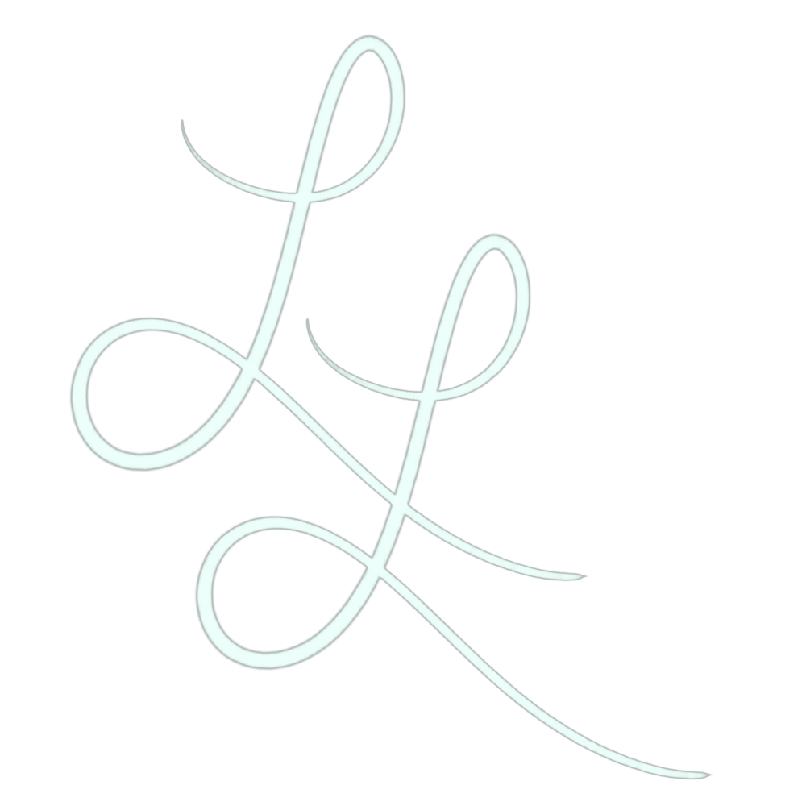

Title:Feed Jerma
URL(s):
Technologies Used: Unity, C#, Adobe Photoshop & Premiere Pro
Description: FeedJerma is an homage to my favorite content
creator of all time, Jerma985. A relatively basic runner game, in it
you traverse a landscape of fanbase inside jokes, collecting
whoppers along the way for points and completing progressively more
challenging levels. I used this game to get my bearings with the
Unity game engine while learning the fundamentals of programming
using C#.
Of course, the game is far from perfect as there are numerous
improvements that can be made from minor bug fixes, like the score
count persisting through level transitions or quality of life
updates like rigging and animating the runner model to actually,
well, run. However, I valued the process of seeing a project to
completion and learning the basics of Git more than I wanted to
listen to that debilitating perfectionism. Finally, I have an
in-depth YouTube video
that documents the entire process of how I created the game (in
only a week).

Title: Pong 2: Jerma Pong
URL(s):
Technologies Used: Unity, C#, Adobe Photoshop & Premiere Pro
Description: Pong 2: Jerma Pong is essentially a sequel to
Pong that is themed around Jerma985 (again), that includes some more
advanced physics work, basic enemy AI (we're talking extremely
barebones but more dynamic than just avoiding static obstacles), and
other more advanced features of Unity.
This project saw me pore hours and hours into learning new concepts
and a ridiculous amount of trial and error to get things working how
I wanted them to. The YouTube video documents the main challenges
but I used a surprising amount of more advanced code for certain
functionality. While it may not have been the most efficiently
executed project, it taught me so much and that was the most
important outcome

Title: Browser Stickies!
URL(s):
Live link to the webapp (stickynotes.lol)
Technologies Used: JavaScript, HTML/CSS, Express.js/Node.js &
MongoDB (MERN minus REACT)
Description: Browser Stickies started as a really basic,
run-of-the-mill task manager app where you could add and subtract
tasks to a relatively pleasing aesthetic backdrop. However, it
evolved into a lot more.
It started with wanting to spruce up the design, then adding
categories, drag-and-drop, and it ended with wanting to persist user
data (currently, I'm using a cookie but eventually will implement
more secure auth/login) with a whole lot of small changes and
features in between. While there definitely is work to be done
(there's a known-bugs list on the GitHub page), building this webapp
introduced me to full-stack development and deployment, giving me a
great framework for the entire process of building a web
application.

Title: Jerma Tribute
URL(s):
 Live link to site (via Netlify)
Technologies Used: HTML/CSS, Adobe Photoshop & Premiere Pro
Live link to site (via Netlify)
Technologies Used: HTML/CSS, Adobe Photoshop & Premiere Pro
Description: If you couldn't already tell, Jerma is my
favorite content creator. This is my third project themed around
him, why? Well, freeCodeCamp has a project for the responsive web
design certification that prompts you to create a tribute page for
someone. I didn't want to risk making something that would
compromise the privacy of any of my loved ones so I chose a public
figure. I also took it as an opportunity to play around with some
different design techniques and patterns, including a navigation
menu that changes in a more signifcant way whether you're on desktop
or mobile.
Jerma's just also a cool dude

Title: Lux Lane
URL(s):

Live link to site
Technologies Used: Unity, C#, Adobe Photoshop & Premiere Pro
Description: For yet another responsive web design
certification project, I was tasked with creating a landing page for
some sort of product. I took it a bit further and sketched out an
entire fictional brand. Settling on a luxury line of gaming
peripherals, I challenged myself to adhere to a style I don't
usually gravitate toward, in concept but also visually. I ended up
making one of, in my opinon, my best looking websites that scales
really well on mobile. There are naturally some tweaks that need to
be made for different heights and some minor alignment issues, but
overall, I'm really proud of how Lux Lane turned out!